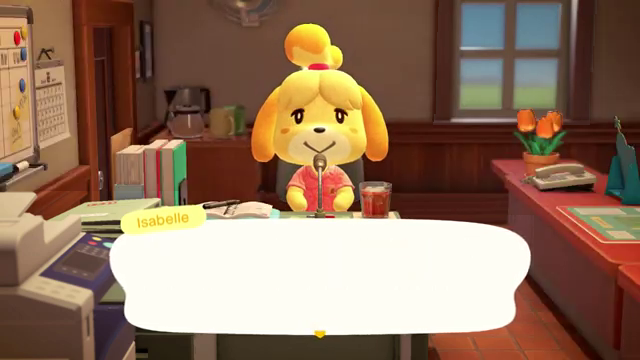

|
Number of frames for this reaction: (without skipping frames)
|
||
| What does this reaction look like? |
GIF settings
| Smoothness quality: | |
| GIF Interval (time to move to next frame): | |
| How many frames to skip: | |
| Total frames saved in this animation with current settings: |
0
|
Disclaimer: This is a beta, so bugs are possible. Worst case worst, just refresh your browser and save every frame before constructing again or click on the "New GIF" button and start fresh again
PLEASE NOTE:
This GIF-making web app works purely on the client-side.
What that means is that creation of the GIF depends on the computational power of the computer you are using.
If you noticed it is taking forever to generate your GIF, it is most likely that your animation has too many frames to process than your computer can handle.
If you are using this for the first time, it is recommended you set the smoothness quality of your GIF to "Low smoothness" above. The "How many frames to skip" setting has a major impact on how much computation your computer has to do before your GIF is generated. So the lower the frame count, the better!
Keep track of the total frame count of your animation above (if starting out, we recommend keeping the frame count of the animation to be under 50), then edit the settings.
PLEASE NOTE:
This GIF-making web app works purely on the client-side.
What that means is that creation of the GIF depends on the computational power of the computer you are using.
If you noticed it is taking forever to generate your GIF, it is most likely that your animation has too many frames to process than your computer can handle.
If you are using this for the first time, it is recommended you set the smoothness quality of your GIF to "Low smoothness" above. The "How many frames to skip" setting has a major impact on how much computation your computer has to do before your GIF is generated. So the lower the frame count, the better!
Keep track of the total frame count of your animation above (if starting out, we recommend keeping the frame count of the animation to be under 50), then edit the settings.

What is this?
Welcome to Animal Crossing GIF Maker, where you can make your own animated GIFs with ease (no video/image editing skills required)!
Currently we support making animated GIFs of Isabelle's intro announcements from New Horizons, allowing you to piece together text and multiple reactions to create your own animated GIF of Isabelle. Whether it is creating a fun story or dank memes, you can let your imagine run wild on what to make Isabelle say.
Sample GIFs made by this site:
Have fun!
Currently we support making animated GIFs of Isabelle's intro announcements from New Horizons, allowing you to piece together text and multiple reactions to create your own animated GIF of Isabelle. Whether it is creating a fun story or dank memes, you can let your imagine run wild on what to make Isabelle say.
Sample GIFs made by this site:

|

|

|

|
Have fun!